This work is part of a collaboration with the Synoptic Edition of Book of the Dead Spell Sources from the 21st Dynasty. To join the team visit their website https://statbs21d.github.io/
Offices: it-nTr n imn-re nsw.t nTr.w (God's Father of Amun Re king of the gods) it-nTr n Mw.t (God's father of Mut), Xnsw (Khonsu)
Source: https://totenbuch.awk.nrw.de/objekt/tm134485

| Directly Above the Deceased | |
|---|---|
| 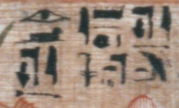 | 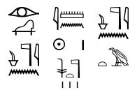 |
|
|
| Directly Behind the Deceased | ||
|---|---|---|
| 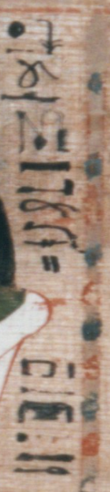 | 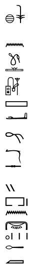 |
MdC: Xnsw rwD sS Sat Nsy-pr-nbw mAa-Xrw |
| Directly in Front of Osiris | |
|---|---|
| 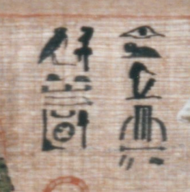 | 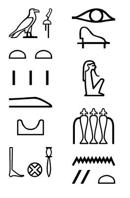 |
|
|
Insert a larger full image of the full papyri. 3284 by 2339 + 4673 by 3415
| Line 1 |
|---|
| 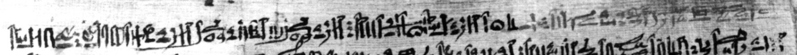 | Line 2 |
| 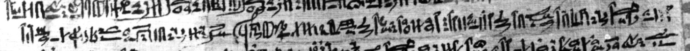 | Line 3 |
| 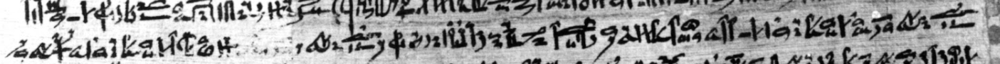 | Line 4 |
| 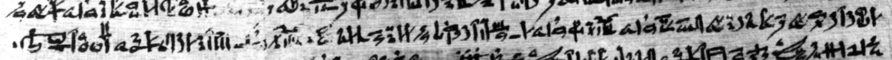 |
| 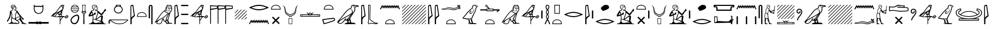 |
| MdC: Add |
| Add | Line 5 |
| 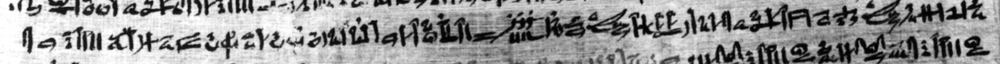 |
| 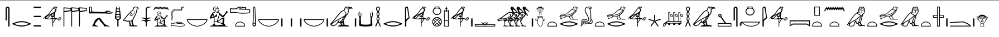 |
| MdC: Hr gs imt wrt m nt pt ink sAHw wrt wr ib-Hr bAw iwnw ir HkAw nb nb mdw nb Dd n.i aHa nTrw r.s |
| ...border of the West in Heaven, I am Orion great in the midst of the souls of Heliopolis, any magic, any spells, and words against me the gods stand against it. | Line 6 |
| 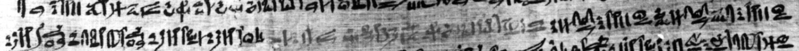 |
| 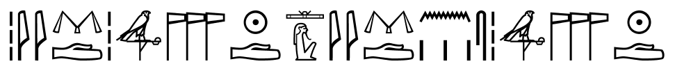 |
| MdC: psDt nTrw dmDyw psDt nTrw dmDyw |
| the entire Ennead of gods, the entire Ennead of gods. |
| Download Jsesh File Line 6.gly |